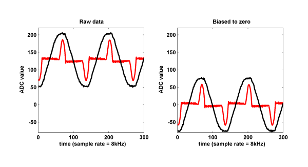
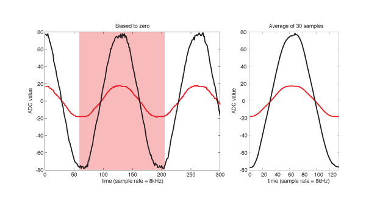

Data preprocessing

The real AC voltage and current are centered at 0, but the data from the Plug comes in 8 bit format (0~255), centered at 128. We shifted the wave to zero by subtracting 128, so that it could be convenient to calculate amplitude, power and zero crossing.
Prior to feature extraction, we preprocessed the data to eliminate the noise
that could affect our model.
First, from the sequence of waves, we started by cutting out one exact period.
The Plug's sample rate is 8 kHz and the power's frequency is 60 Hz, so approximately
we get 8000/60 =133 samples per wave.

We defined a period as a timeframe from a voltage minimum to the next minimum.
This was chosen to have the maximum value of voltage signals placed at the
center of the timeframe. The maximum of current signals, although with some
offset, would also align near the center.
Due to the noise of ADC, we took the mean of multiple signal periods. About 30
samples (= 0.5 sec) were averaged. The difference between two samples at two different times lowered
significantly.